Contents
1. Introduction
2. Project Structure
2.1 Required Technologies
3. Basic Understanding of D3 and Sankey Diagram
3.1 D3 (Data Driven Documents)
3.2 Sankey Diagram
4. Functional Flow of Circular Sankey
4.1 Loading and Parsing Data
4.2 A close look on SVG elements: Rectangles and Cubic Bézier Curves
4.2.1 How Rectangle and Cubic Bézier Curves work together
4.2.2 Coordinate transformation of Rectangles and Curves
4.3 Saving Data Into Database
4.4 Exporting Diagram as SVG
5. Managing User History
6. Conclusion
7. References
As a server side technology, I have used ASP.Net 4.5 and C# as a server-side language. I have used Mysql database as database platform to store user history and login authorization.
I used Microsoft Visual Studio 2015 as IDE and MySQL Workbench 6.3 as database IDE.
Large and complex datasets can be easily bound after parsing into various formats (mostly JSON and CSV) to SVG objects using simple D3.js functions to generate rich text/graphic charts and diagrams (see more).
The illustration shows a Sankey diagram which represents all the primary energy flows into a factory. The widths of the bands are directly proportional to energy production, utilization and losses. The primary energy sources are gas, electricity and coal/oil and represent energy inputs at the left hand side of the Sankey diagram . They can also visualize the energy accounts, material flow accounts on a regional or national level, and also the breakdown of cost of item or services.
Lets look at the bellow's example (see the source)
This Sankey diagram for an electric lamp shows that most of the electrical energy is transferred as heat rather than light.
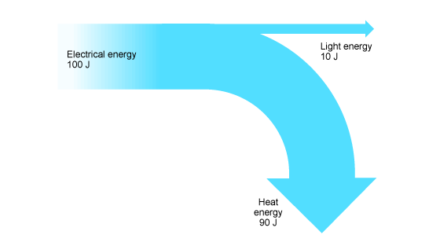
Energy can be transferred usefully, stored or dissipated. It cannot be created or destroyed. Notice that 100 J of electrical energy is supplied to the lamp. Of this, 10 J is transferred to the surroundings as light energy. The remainder, 90 J (100 J – 10 J) is transferred to the surroundings as heat energy.
Lets see another image which is generated using an available online tool (Sankey Matic).
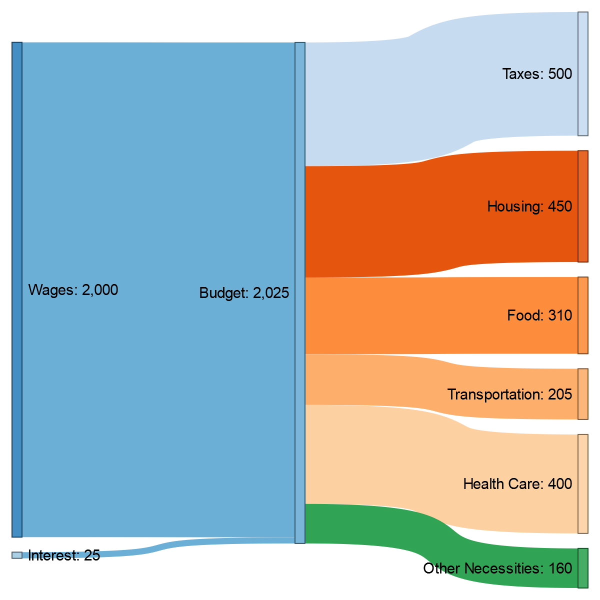
In this particular diagram, we have 9 individual states/nodes drawn as rectangles and among these nodes we have 8 data flows/links which is drawn as curves. Its also needed to mention that these graphical shapes or attributes are basically svg elements that we used here (we will mainly use svg rectangles and svg cubic bézier curves).
1. Loading data.
2. Binding data to elements.
3. Transforming elements depending on the bound data.
4. Employ transitioning onto elements according to user interaction.
Sankey library does not have the luxary to work on some randome data if its not well structured. Sankey works directly on JSON file format or csv format
.JSON
.csv
However, We tried to add more control over nodes and flows property by the users. For this reason our input data format will be more complex. Instead of taking only [name_of_source_node, name_of_target_node, value] properties, we are taking the important information of both nodes [name_of_node] [color] [orientation] [width] [height] [x_position] [y_position] and flows [name_of_source_node] [value] [flow color] [name_of_target_node] properties from the user. This is the one of the main features that we introduced in our circular sankey tool over the existing sankey tools. Now if one is become interested to see how sankey library works based on only three [name_of_source_node, name_of_target_node, value] information, I would highly recommend you to read this article (Sankey Diagrams: A Description of the d3.js Code).
We have two main way to take data input.
1. By uploading data file in .csv or .xlsx or .txt format.
The upload file option take a file from user specified directory and parse the data into our target data format which we use for generating sankey diagram. Data parsing is always very complex as there are varieties of data format is available and therefore effective data parsing to target data format is essential.
2. Using specified input text box direcly.
Data format for Nodes:
Data format for flows between Nodes:
As we can see, we have three svg attributes here in this figure. The rectangles (nodes), flow curves (links) between rectangles and text (title of nodes). I am not going to describe how these attributes are done by code as these building blocks are already available ( Sankey Diagrams:A Description of the d3.js Code). Rather, I would describe the distinct features of our circular sankey which we believe is unique. To support the idea, we are introducing the circular behavior of Sankey Diagram. As we can see in the picture the orientation of each rectangles is 0 degree or in another sense the rectangles are straight and the overall information flow of the diagram is flowing from left to right. So, we can say the source is in left side and target is in right side. What if we want something more interactive? For example- what if we want a cycle, where data will be flown a circular way rather than just staright left to right direction (see figure bellow-). To achieve this idea into reality, our first step should be applying transformation onto the rectangles; in other words- we have to apply the orientation value (instead of default 0 degree we will ensure the rectangles are rotating according to user defined angle value ranging (0<=orientation_value>=360)) for rectangles and other related adjustments (we will see more in section 4.2.2). Before that, we will have a look how individual rectangles and curves are created and how they are inter-connected (section 4.2.1):
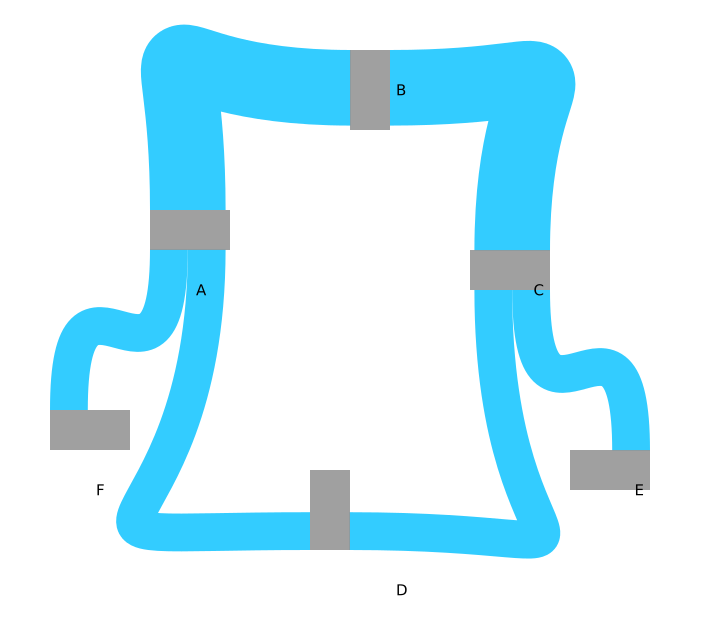
Above two code segments are the very basic of making SVG rectangle. The codes are pretty straight forward and don't need more explanation. The next segment of code is important to understand how Cubic Bézier Curve works.
The initial M directive moves the pen to the first point (100,250). Following the ‘C’ are three co-ordinates; the start control point (100,100), the end control point (400,100) and the final point we’re drawing to (400,250).
For Circular sankey, we have this block of code for generating rectangle.
The original sankey library sets all these rectangle properties automatically, that means user has absolutely no control. This is sometimes useful when someone tries to avoid complexity or doesn't care about setting own interest manually. On the other hand, this is very useful and meaningful if someone wants more interactive diagram by imposing own interest and deal with the circular property that we discussed above. These manual node properties should give much flexible nodes matching with user interest but its yet to be achieved taking care of some other changes (we will come to this point).
Now lets have look how links/flows/Curves between the nodes/rectangles are formed.
This block of code responsible for creating the Cubic Bézier Curves. This is also quite straight forward. From given link data it generate the Cubic Bézier Curve. We will more into this code specially lets see how the link data is formed.
So we can see how the coordinate values are calculated. From two node position (source and target), this link function use some mathematical terms and finally return the values
which are needed to draw these Cubic Bézier Curves (see more in section 4.2).
Here comes our main challenge. We have our node properties and we also get our link properties from above function right away (you could say from the very first block of code of sankey script). And we already know link (Cubic Bézier Curve) coordinates are based on the source and target node position. Later when we draw the rectangles using the user give node data we also use the rotation value to rotate the rectangle. Once we rotate the rectangle, the x and y coordinate position of source and target rectangle changes. We already know that the Cubic Bézier Curve properties (staring point, first control point, second control point and ending point) are directly calculated from source and target node/rectangle position. As we are rotating the nodes, we have to change the link function also to re-calculate link properties based on the new source and target node position. To adjust this change we have to understand the coordinate transformation.
X2=X1 + (width * cosθ)
Y2=Y1 + (width * sinθ)
where width is the corresponding node width and θ is the corresponding node orientation value. Both values are user defined and can be found in node data. Based on this coordinate transformation idea we can re-calculate all the new points of Cubic Bézier Curves in link function.
Let's have a look into our new link function.
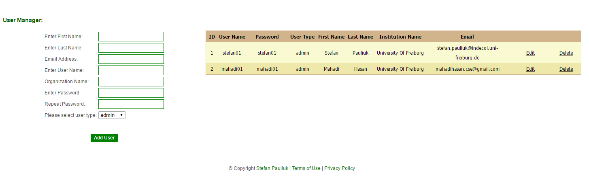
1. Introduction
2. Project Structure
2.1 Required Technologies
3. Basic Understanding of D3 and Sankey Diagram
3.1 D3 (Data Driven Documents)
3.2 Sankey Diagram
4. Functional Flow of Circular Sankey
4.1 Loading and Parsing Data
4.2 A close look on SVG elements: Rectangles and Cubic Bézier Curves
4.2.1 How Rectangle and Cubic Bézier Curves work together
4.2.2 Coordinate transformation of Rectangles and Curves
4.3 Saving Data Into Database
4.4 Exporting Diagram as SVG
5. Managing User History
6. Conclusion
7. References
1. Introduction
In recent days where there is huge amount of scientific data is available and needs to present them in a interactive way, data visualization became a important part of software application especially in web. This implemented circular sankey generates graphical diagram consists of different types of graphical shape (mainly rectangles and curve lines) where rectangles indicate states and curve lines indicate the flow between the states of a specific system.2. Project Structure
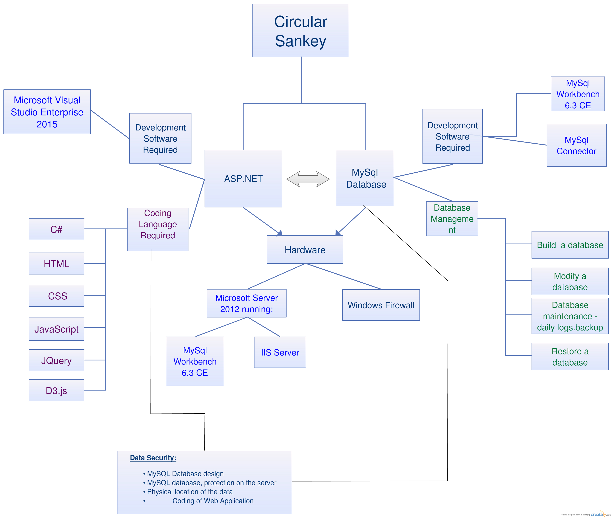2.1 Required Technologies
Circular Sankey is build on the open source tool D3.js and its Sankey library. We created a seperate Sankey library to handle the circular property (described later) with the help of available Sankey library. In some cases JQuery and JavaScript has been used.As a server side technology, I have used ASP.Net 4.5 and C# as a server-side language. I have used Mysql database as database platform to store user history and login authorization.
I used Microsoft Visual Studio 2015 as IDE and MySQL Workbench 6.3 as database IDE.
3. Basic Understanding of D3 and Sankey Diagram
3.1 D3 (Data Driven Documents)
Data-Driven Documents (or D3) is a JavaScript API library for producing dynamic, interactive data visualization for the web. D3 enables direct inspection and manipulation of the standard document object model (DOM). Technically, D3.js is a very thin layer on top of modern web technologies to build powerful data visualization with the effective use of SVG, JSON, JQuery, HTML5 and CSS. It uses pre-built JavaScript functions to select elements, create SVG objects, style them, add transitions or dynamic effects (according to user's requirement) to them, which can easily be decorated with CSS.Large and complex datasets can be easily bound after parsing into various formats (mostly JSON and CSV) to SVG objects using simple D3.js functions to generate rich text/graphic charts and diagrams (see more).
3.2 Sankey Diagram
(From wikipedia) Sankey diagrams are a specific type of flow diagram, in which the width of the arrows is shown proportionally to the flow quantity.The illustration shows a Sankey diagram which represents all the primary energy flows into a factory. The widths of the bands are directly proportional to energy production, utilization and losses. The primary energy sources are gas, electricity and coal/oil and represent energy inputs at the left hand side of the Sankey diagram . They can also visualize the energy accounts, material flow accounts on a regional or national level, and also the breakdown of cost of item or services.
Lets look at the bellow's example (see the source)
This Sankey diagram for an electric lamp shows that most of the electrical energy is transferred as heat rather than light.
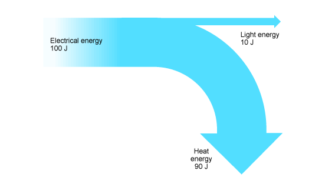
Energy can be transferred usefully, stored or dissipated. It cannot be created or destroyed. Notice that 100 J of electrical energy is supplied to the lamp. Of this, 10 J is transferred to the surroundings as light energy. The remainder, 90 J (100 J – 10 J) is transferred to the surroundings as heat energy.
Lets see another image which is generated using an available online tool (Sankey Matic).
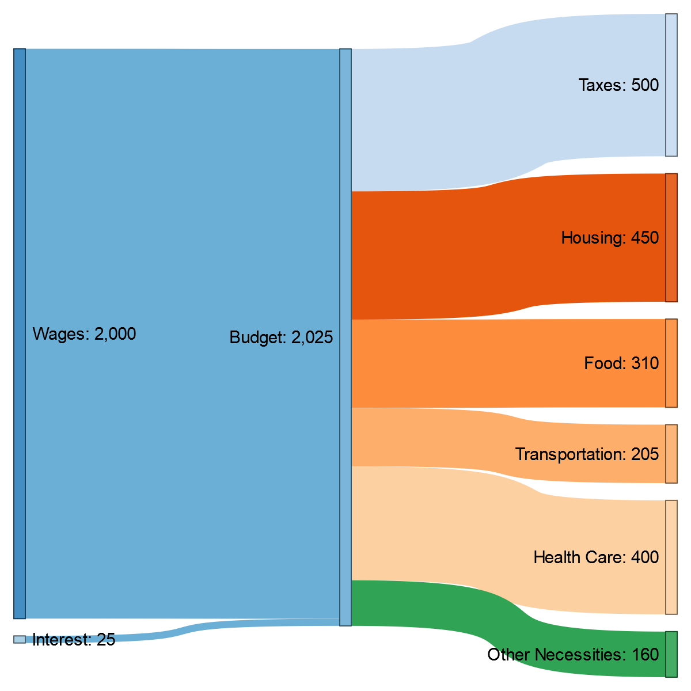
Wages [2000] Budget Interest [25] Budget Budget [500] Taxes Budget [450] Housing Budget [310] Food Budget [205] Transportation Budget [400] Health Care Budget [160] Other Necessities
In this particular diagram, we have 9 individual states/nodes drawn as rectangles and among these nodes we have 8 data flows/links which is drawn as curves. Its also needed to mention that these graphical shapes or attributes are basically svg elements that we used here (we will mainly use svg rectangles and svg cubic bézier curves).
4. Functional Flow of Circular Sankey
Basically our circular sankey will follow the bellow's steps to complete its working process.1. Loading data.
2. Binding data to elements.
3. Transforming elements depending on the bound data.
4. Employ transitioning onto elements according to user interaction.
4.1 Loading and Parsing Data
Sankey library does not have the luxary to work on some randome data if its not well structured. Sankey works directly on JSON file format or csv format
.JSON
{
"nodes":[
{"name":"Barry"},
{"name":"Frodo"},
{"name":"Elvis"},
{"name":"Sarah"},
{"name":"Alice"}
],
"links":[
{"source":"Barry","target":"Elvis","value":2},
{"source":"Frodo","target":"Elvis","value":2},
{"source":"Frodo","target":"Sarah","value":2},
{"source":"Barry","target":"Alice","value":2},
{"source":"Elvis","target":"Sarah","value":2},
{"source":"Elvis","target":"Alice","value":2},
{"source":"Sarah","target":"Alice","value":4}
]}
.csv
source,target,value
Barry,Elvis,2
Frodo,Elvis,2
Frodo,Sarah,2
Barry,Alice,2
Elvis,Sarah,2
Elvis,Alice,2
Sarah,Alice,4
However, We tried to add more control over nodes and flows property by the users. For this reason our input data format will be more complex. Instead of taking only [name_of_source_node, name_of_target_node, value] properties, we are taking the important information of both nodes [name_of_node] [color] [orientation] [width] [height] [x_position] [y_position] and flows [name_of_source_node] [value] [flow color] [name_of_target_node] properties from the user. This is the one of the main features that we introduced in our circular sankey tool over the existing sankey tools. Now if one is become interested to see how sankey library works based on only three [name_of_source_node, name_of_target_node, value] information, I would highly recommend you to read this article (Sankey Diagrams: A Description of the d3.js Code).
We have two main way to take data input.
1. By uploading data file in .csv or .xlsx or .txt format.
The upload file option take a file from user specified directory and parse the data into our target data format which we use for generating sankey diagram. Data parsing is always very complex as there are varieties of data format is available and therefore effective data parsing to target data format is essential.
2. Using specified input text box direcly.
Data format for Nodes:
Name Color Orientation Width Height X_position Y_position Agriculture (0, 255, 0) 0 40 80 150 250 Waste water (255, 0, 0) 20 40 100 380 50 Industry (222, 83, 36) 90 30 80 800 200 Coal Mining (167, 98, 36) 180 40 80 650 450 Methane (94, 193, 36) 180 40 80 500 650 Nitrous Oxide (0, 153, 51) 180 40 80 300 550
Data format for flows between Nodes:
Source Value Color Target Agriculture 12 (0, 191, 255) Waste water Waste water 10 (255, 0, 255) Industry Industry 6 (0, 64, 255) Coal Mining Coal Mining 11 (153, 0, 115) Methane Methane 12 (0, 153, 0) Nitrous Oxide Nitrous Oxide 12 (255, 0, 0) Agriculture
4.2 A close look on SVG elements: Rectangles and Cubic Bézier Curves
After parsing data into our target format, our next approach is to create the required svg elements. Let's look at another simplified example figure- (source) 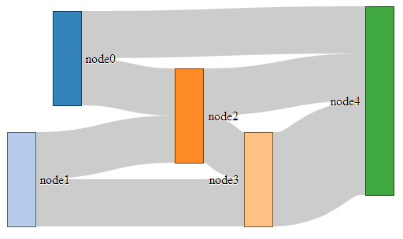As we can see, we have three svg attributes here in this figure. The rectangles (nodes), flow curves (links) between rectangles and text (title of nodes). I am not going to describe how these attributes are done by code as these building blocks are already available ( Sankey Diagrams:A Description of the d3.js Code). Rather, I would describe the distinct features of our circular sankey which we believe is unique. To support the idea, we are introducing the circular behavior of Sankey Diagram. As we can see in the picture the orientation of each rectangles is 0 degree or in another sense the rectangles are straight and the overall information flow of the diagram is flowing from left to right. So, we can say the source is in left side and target is in right side. What if we want something more interactive? For example- what if we want a cycle, where data will be flown a circular way rather than just staright left to right direction (see figure bellow-). To achieve this idea into reality, our first step should be applying transformation onto the rectangles; in other words- we have to apply the orientation value (instead of default 0 degree we will ensure the rectangles are rotating according to user defined angle value ranging (0<=orientation_value>=360)) for rectangles and other related adjustments (we will see more in section 4.2.2). Before that, we will have a look how individual rectangles and curves are created and how they are inter-connected (section 4.2.1):
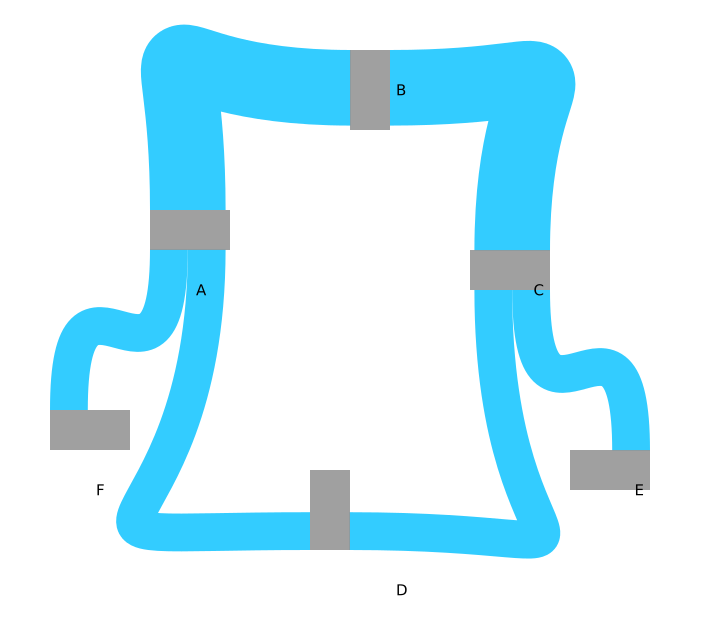
4.2.1 How Rectangle and Cubic Bézier Curves work together
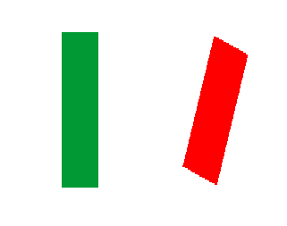 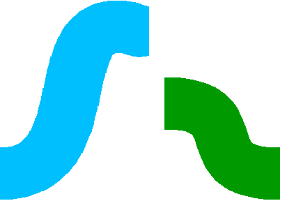 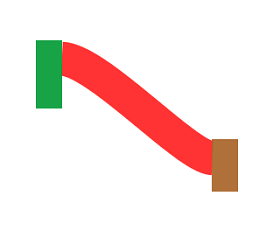
1 2 3 |
<svg width="50" height="50"> <rect x="0" y="0" width="50" height="50" fill="green" /> </svg> |
1 2 3 4 5 6 7 8 9 |
var svgContainer = d3.select("body").append("svg") .attr("width", 200) .attr("height", 200); var rectangle = svgContainer.append("rect") .attr("x", 10) .attr("y", 10) .attr("width", 50) .attr("height", 100); |
Above two code segments are the very basic of making SVG rectangle. The codes are pretty straight forward and don't need more explanation. The next segment of code is important to understand how Cubic Bézier Curve works.
1 2 3 |
<svg width="190" height="160"> <path d="M100,250 C100,100 400,100 400,250" " stroke="black" fill="transparent"/> </svg> |
The initial M directive moves the pen to the first point (100,250). Following the ‘C’ are three co-ordinates; the start control point (100,100), the end control point (400,100) and the final point we’re drawing to (400,250).
For Circular sankey, we have this block of code for generating rectangle.
1 2 3 4 5 6 7 8 9 10 11 12 13 14 15 16 17 18 19 20 21 22 23 24 25 26 27 28 29 30 31 32 33 34 35 36 37 38 39 40 41 42 |
var node = svg.append("g").selectAll(".node") .data(json_data.nodes) // using node properties .enter().append("g") .attr("class", "node") // use CSS named node .attr("transform", function (d) { return "translate(" + d.x + "," + d.y + ")"; //allocate the position of X_coordinate and Y_coordinate from given node data }) .call(d3.behavior.drag() .origin(function (d) { return d; }) .on("dragstart", function () { this.parentNode.appendChild(this); }) .on("drag", dragmove)); node.append("rect") .attr("width", function (d) { node_width_counter++; return a_node_width[node_width_counter]; // manually set width from given node data }) .attr("height", function (d) { return d.dy; // manually set height from given node data }) .attr("transform", function (d) { return "rotate(" + d.angle + ")" // manually set rotation value to each rectangle from given node data }) .attr("shape-rendering", "crispEdges") .style("fill", function (d) { node_color_counter++; return node_color[node_color_counter]; // manually set node color from given node data }) .style("fill-opacity", function (d) { return d.opacity || data_set.default_node_opacity; }) .style("stroke-width", data_set.node_border || 0) .style("stroke", function (d) { return node_color[node_color_counter]; }) .append("title") .text( function (d) { return data_set.show_labels ? d.name + "\n" + units_format(d.value) : ""; }); |
The original sankey library sets all these rectangle properties automatically, that means user has absolutely no control. This is sometimes useful when someone tries to avoid complexity or doesn't care about setting own interest manually. On the other hand, this is very useful and meaningful if someone wants more interactive diagram by imposing own interest and deal with the circular property that we discussed above. These manual node properties should give much flexible nodes matching with user interest but its yet to be achieved taking care of some other changes (we will come to this point).
Now lets have look how links/flows/Curves between the nodes/rectangles are formed.
1 2 3 4 5 6 7 8 9 10 11 12 13 14 15 16 17 18 19 20 21 22 23 24 25 26 27 28 29 |
var link = svg.append("g").selectAll(".link") .data(json_data.links) .enter() .append("path") .attr("class", "link") .attr("d", path) .style("fill", "none") .style("stroke-width", function (d) { return Math.max(1, (d.dy)); }) .style("stroke", function (d) { return d.color ? d.color : d.source.inherit_right ? d.source.color : d.target.inherit_left ? d.target.color : data_set.default_flow_inherit === "source" ? d.source.color : data_set.default_flow_inherit === "target" ? d.target.color : data_set.default_flow_color; }) .style("stroke-opacity", function (d) { return d.opacity || data_set.default_flow_opacity; }) .on('mouseover', function (d) { d3.select(this).style("stroke-opacity", d.opacity_on_hover || ((Number(data_set.default_flow_opacity) + 1) / 2)); }) .on('mouseout', function (d) { d3.select(this).style("stroke-opacity", d.opacity || data_set.default_flow_opacity); }) .sort(function (a, b) { return b.dy - a.dy; }); |
This block of code responsible for creating the Cubic Bézier Curves. This is also quite straight forward. From given link data it generate the Cubic Bézier Curve. We will more into this code specially lets see how the link data is formed.
1 2 3 4 5 6 7 8 9 10 11 12 13 14 15 16 17 18 19 20 21 22 23 24 25 26 |
sankey.link = function () { var curvature = .5; function link(d) { var x0 = d.source.x + d.source.dx, // d.source.x is the x position of source node and d.source.dx is the width source node x1 = d.target.x, // d.target.x is the x position of target node xi = d3.interpolateNumber(x0, x1), // interpolate between x0 and x1 x2 = xi(curvature), // curvature is the property which controls how much curvy the link will be (value ranges from 0-.9) x3 = xi(1 - curvature), y0 = d.source.y + d.sy + d.dy / 2, // d.sy is calculated based on link widh and how many links are associated with each source node and d.dy is the height of node y1 = d.target.y + d.ty + d.dy / 2; // d.ty is calculated based on link widh and how many links are associated with each target node return "M" + x0 + "," + y0 + "C" + x2 + "," + y0 + " " + x3 + "," + y1 + " " + x1 + "," + y1; } link.curvature = function (_) { if (!arguments.length) return curvature; curvature = +_; return link; }; return link; }; |
Here comes our main challenge. We have our node properties and we also get our link properties from above function right away (you could say from the very first block of code of sankey script). And we already know link (Cubic Bézier Curve) coordinates are based on the source and target node position. Later when we draw the rectangles using the user give node data we also use the rotation value to rotate the rectangle. Once we rotate the rectangle, the x and y coordinate position of source and target rectangle changes. We already know that the Cubic Bézier Curve properties (staring point, first control point, second control point and ending point) are directly calculated from source and target node/rectangle position. As we are rotating the nodes, we have to change the link function also to re-calculate link properties based on the new source and target node position. To adjust this change we have to understand the coordinate transformation.
4.2.2 Coordinate transformation of Rectangles and Curves
While working with straight rectangle (with 0 degree orientation), we saw our link function basically work on every coordinate points of nodes. Therefore, we need to know what will be new coordinate points of every node once we rotate with specified angle (let's say θ). In the figure bellow we can see how the coordinate points are changing after imposing θ. 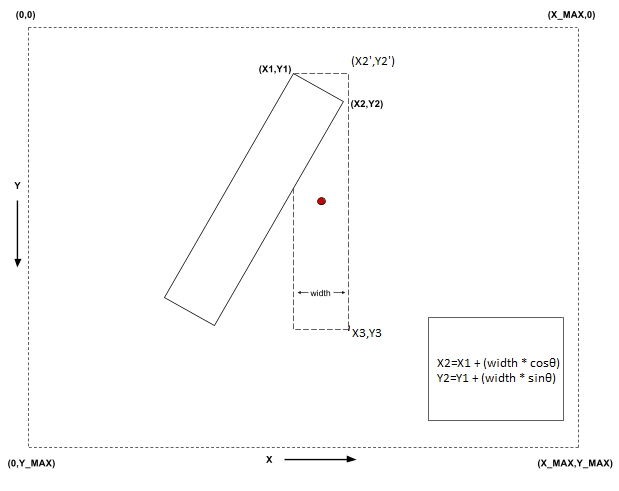 So, initial point (X2',Y2') will be transformed into new point (X2, Y2) using the formula-X2=X1 + (width * cosθ)
Y2=Y1 + (width * sinθ)
where width is the corresponding node width and θ is the corresponding node orientation value. Both values are user defined and can be found in node data. Based on this coordinate transformation idea we can re-calculate all the new points of Cubic Bézier Curves in link function.
Let's have a look into our new link function.
1 2 3 4 5 6 7 8 9 10 11 12 13 14 15 16 17 18 19 20 21 22 23 24 25 26 27 28 29 30 31 32 33 34 35 36 37 38 39 40 |
sankey.link = function () { function link(d) { var x0 = d.source.x + d.source.dx, // d.source.x is the x position of source node and d.source.dx is the width source node x1 = d.target.x, // d.target.x is the x position of target node xi = d3.interpolateNumber(x0, x1), // interpolate between x0 and x1 y0 = d.source.y + d.sy + d.dy / 2, // d.sy is calculated based on link widh and how many links are associated with each source node and d.dy is the height of node y1 = d.target.y + d.ty + d.dy / 2, // d.ty is calculated based on link widh and how many links are associated with each target node x_2 = d.source.x + (d.source.dx * Math.cos((Math.PI / 180) * d.source.angle)), // x2_source = d.source.x + (node_width * cosθ) y_2 = d.source.y + (d.source.dx * Math.sin((Math.PI / 180) * d.source.angle)), // y2_source = d.source.y + (node_width * sinθ) x0_r = x_2 - ((d.sy + d.dy / 2) * Math.sin((Math.PI / 180) * d.source.angle)), // final x0_r from x2_source with the value of d.sy and d.dy y0_r = y_2 + ((d.sy + d.dy / 2) * Math.cos((Math.PI / 180) * d.source.angle)), // final y0_r from x2_source with the value of d.sy and d.dy x_2_t = d.target.x + (Math.cos((Math.PI / 180) * d.target.angle)), // x_2_t_target = d.target.x + (cosθ) y_2_t = d.target.y + (Math.sin((Math.PI / 180) * d.target.angle)), // y_2_t_target = d.target.y + (sinθ) x1_r = x_2_t - ((d.ty + d.dy / 2) * Math.sin((Math.PI / 180) * d.target.angle)), // final x1_r from x_2_t_target with the value of d.ty and d.dy y1_r = y_2_t + ((d.ty + d.dy / 2) * Math.cos((Math.PI / 180) * d.target.angle)), // final y1_r from y_2_t_target with the value of d.ty and d.dy distance = Math.sqrt((x0 - x1) * (x0 - x1) + (y0 - y1) * (y0 - y1)) // Euclidien distance between source and target x2 = x0_r + Math.cos((Math.PI / 180) * d.source.angle) * distance * curvature, // x position for source control point y0_r_r = y0_r + Math.sin((Math.PI / 180) * d.source.angle) * distance * curvature, // Y position for source control point x3 = x1_r + Math.cos((Math.PI / 180) * (d.target.angle + 180)) * distance * curvature, // x position for target control point y1_r_r = y1_r + Math.sin((Math.PI / 180) * (d.target.angle + 180)) * distance * curvature; // y position for target control point return "M" + x0_r + "," + y0_r + "C" + x2 + "," + y0_r_r + " " + x3 + "," + y1_r_r + " " + x1_r + "," + y1_r; } link.curvature = function (_) { if (!arguments.length) return curvature; curvature = +_; return link; }; return link; }; |
4.3 Saving Data Into Database
Circular Sankey offers the option of storing data. An unique job id is created every time user wants to save the data into database. There is a datagrid which shows all the job id's that specific user created so for. User can easily view the meta data and the actual diagram data. It is also possible to navigate and recreate the exactly same diagram with exactly same values that user left last time. So, we can say no user history will be lost.4.4 Exporting Diagram as SVG
After successful completion of the diagram user can download the diagram as svg format. Other image format could be an option which we might focus in future.5. Managing User History
Circular Sankey also have a portal for user maintenance page which is only accessible by admin type of users. An admin can fill the registration fields and create a new user. There is also other necessary measurements which ensure that every user is unique and no user will be able to view or access the data or history of other users.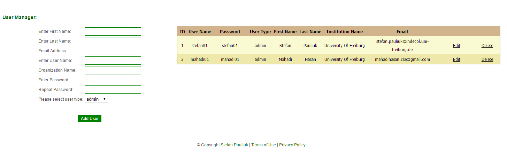